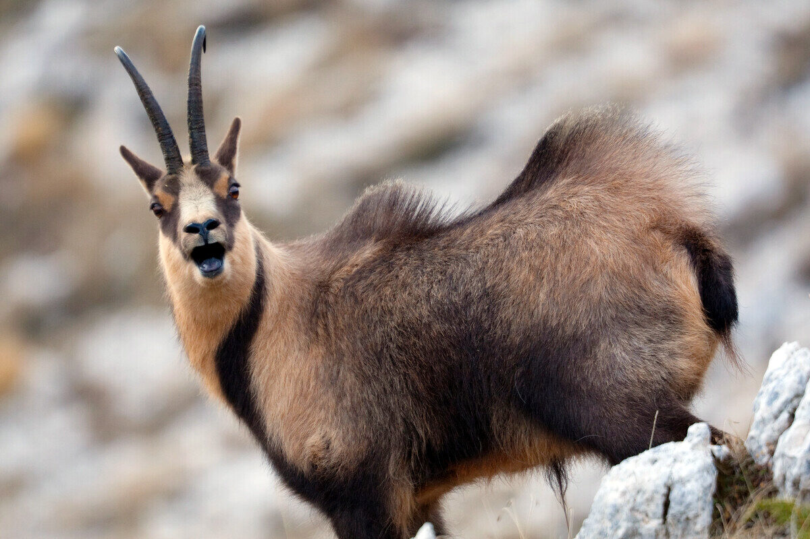
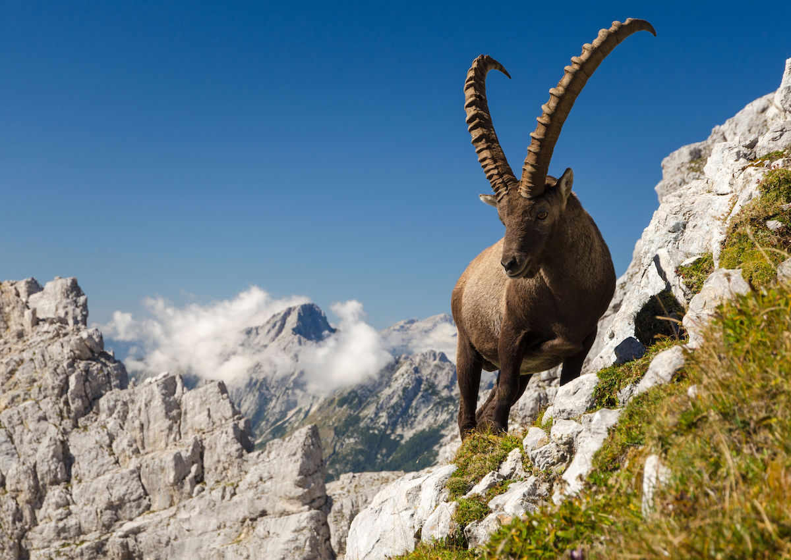
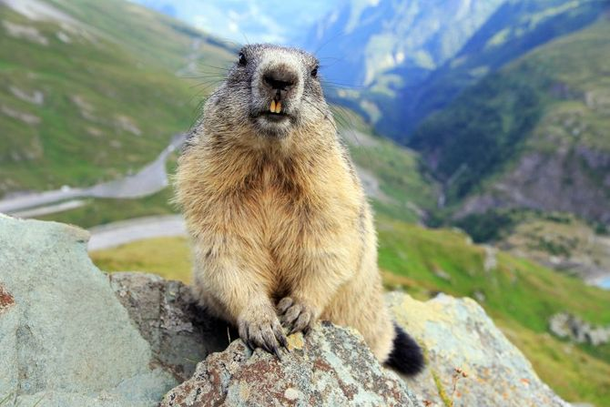
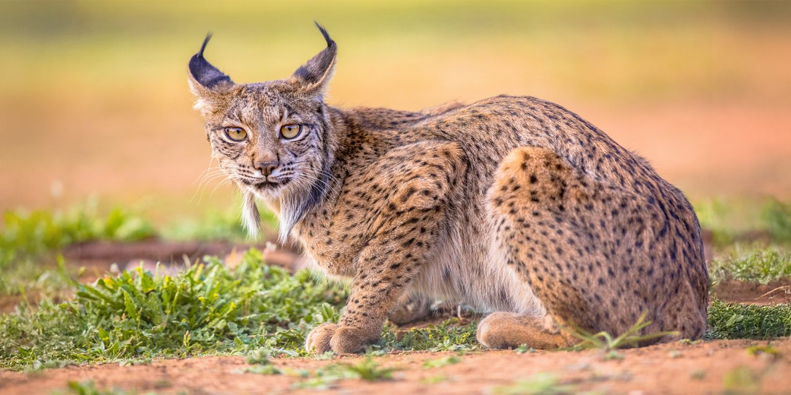
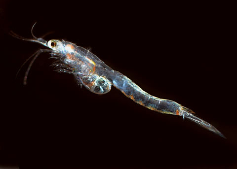

Animals
Chamois (Rupicapra rupicapra) — Cliff antelope of mountains and meadows; often is observed above the treeline in Swiss National Park (Swiss National Park, n.d.).
Ibex (Capra ibex) — Wild goat with long, curved horns that everyone knows. spotted in rocky elevations (Swiss National Park, n.d.).
Marmot (Marmota marmota) — Burrowing rodents that hibernate through long winters and act as prey, they disperse seeds, and make complicated burrows in the soil (Swiss National Park, n.d.).
Lynx (Lynx lynx) — Has been reintroduced as the top predator that helps control herbivores; there are about ~250 individuals in Switzerland in two main groups (Breitenmoser, 1998; swissinfo.ch, 2021).
Arctic grayling (Thymallus thymallus) — Cold water fish of the Alpine rivers and canals in Switzerland; they have shown a big negative effect from global warming (Eawag, 2023; FishBase, 2017).

Opossum shrimps (Mysidae) — Opposum shrimps are tiny crustaceans in cold, deep lakes and semi Alpine waters; they play a crucial role in food webs and recorded in Lake Geneva as invasive winter swarms of Hemimysis anomala (Jacquet et al., 2023).
How animals connect
Predators like lynx control the herbivores; marmots transmit seeds and feed raptors; Aquatic insects feed graylings; and alpine vegetation stabilizes soils and supplies coverage and home for animals. These links keep the ecosystem stable and running.